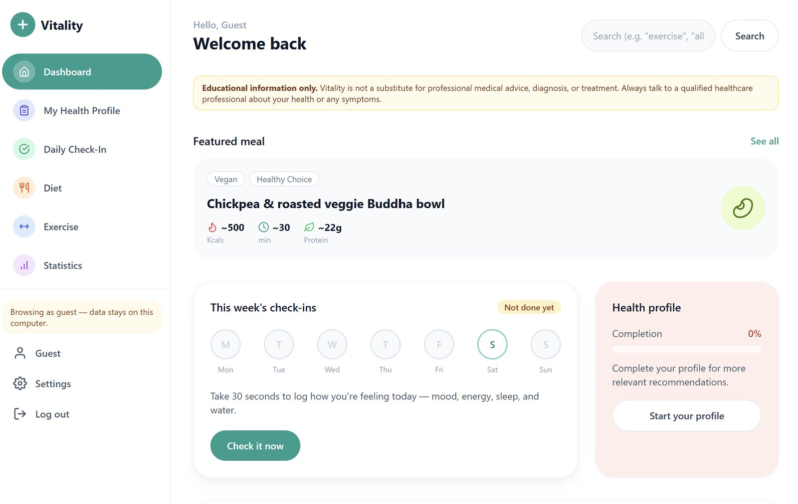

Dashboard
The summary hub. Key metrics as cards, a weekly activity chart, and quick access to everything else.
Page in the siteVitality gives people a calm place to check in on their day, build a health profile, and find educational ideas for food and exercise. This page follows the project from a written brief to the dashboard people see today.

The brief set one hard limit before any screen existed. Everything on the site is educational. It does not diagnose, and it does not prescribe. Every later decision had to respect that line.
The brief described the flow and the pages. A second set of prompts described how each area should work and feel. The overall style stayed the same for every area: modern, minimal, flat, sans-serif, professional and calming but energetic.
The summary hub. Key metrics as cards, a weekly activity chart, and quick access to everything else.
Page in the siteAction, tracking and planning. A list of recent activities, a weekly calendar of active days, and workout categories.
Page in the siteIntake, balance and logging. A calorie and macronutrient breakdown and a food log by meal. This became the Diet page.
Page in the siteTrends and progress over time: weight, steps and heart rate, with filters.
Page in the siteSafety, consistency and reminders. A daily schedule grid and an information page with a safety flow.
Not in the sitePeople open the site, log in or continue as a guest, and land on the dashboard. From there they can check in, work on their health profile, browse Diet or Exercise, look at Statistics, or search. Finishing the profile makes the recommendations more relevant.
flowchart TD A[Open site] --> B[Log in or continue as guest] B --> C[Dashboard] C --> D[Daily check-in] C --> E[My health profile] C --> F[Diet] C --> G[Exercise] C --> H[Statistics] C --> I[Search] C --> J[Settings and log out] E --> K[More relevant recommendations]
The design uses rounded cards and pill buttons, large readable headings, an icon for every page, and plenty of white space, so the home screen stays easy to scan.
Statistics, which came from the visual prompts, is now part of the navigation. The site does not have a medication page.
Educational information only. Vitality is not a substitute for professional medical advice, diagnosis, or treatment. Always talk to a qualified healthcare professional about your health or any symptoms.
The brief set the rules: no diagnosis, no prescribing, and a clear pointer to a qualified healthcare professional. The notice sits above everything else so people read it before they read any suggestion.
Biology, science, health, working out and self-care are the subjects I care about most. A wellness app let me bring all of them together in one project.
Balancing personalization with user safety. I wanted recommendations that fit each person, while respecting their privacy and keeping the site in its role as an educational tool that never gives potentially unsafe medical advice.
More detail in the diet section, with cooking tutorials and photos for each meal, and tutorials for the workout routines so they are easier to follow.